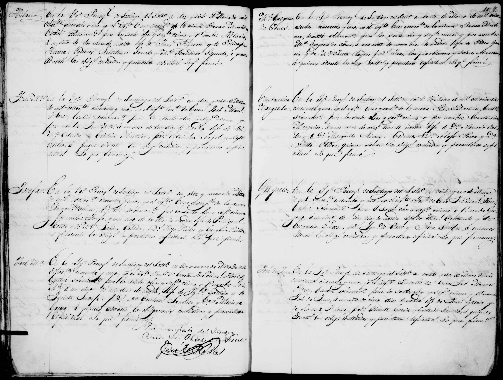

← Volver al Archivo Central
Expediente Histórico: Acta Bautismo Jose del Jesus Garcia Flores 1851 F1

Manuscrito Original (Clic para ampliar)
Transcripción Paleográfica
Perfil: Acta de Bautismo (F1)
Descripción: Registro de bautismo de José del Jesús García Flores (F1), del año 1851.
Transcripción:
Al margen: José del Jesús.
En la Parroquia de Patos [General Cepeda], a los [...] días del mes de [...] de mil ochocientos cincuenta y uno, Yo el Presbítero [...] bauticé solemnemente y puse los santos óleos y sagrado crisma a un niño que nació el [...] del presente a quien puse por nombre José del Jesús, hijo legítimo de Juan de Dios García y María del Refugio Peña. Abuelos paternos: [...] y [...]. Abuelos maternos: [...] y [...]. Fueron sus padrinos [...] a quienes advertí su obligación y parentesco espiritual y para que conste lo firmé.